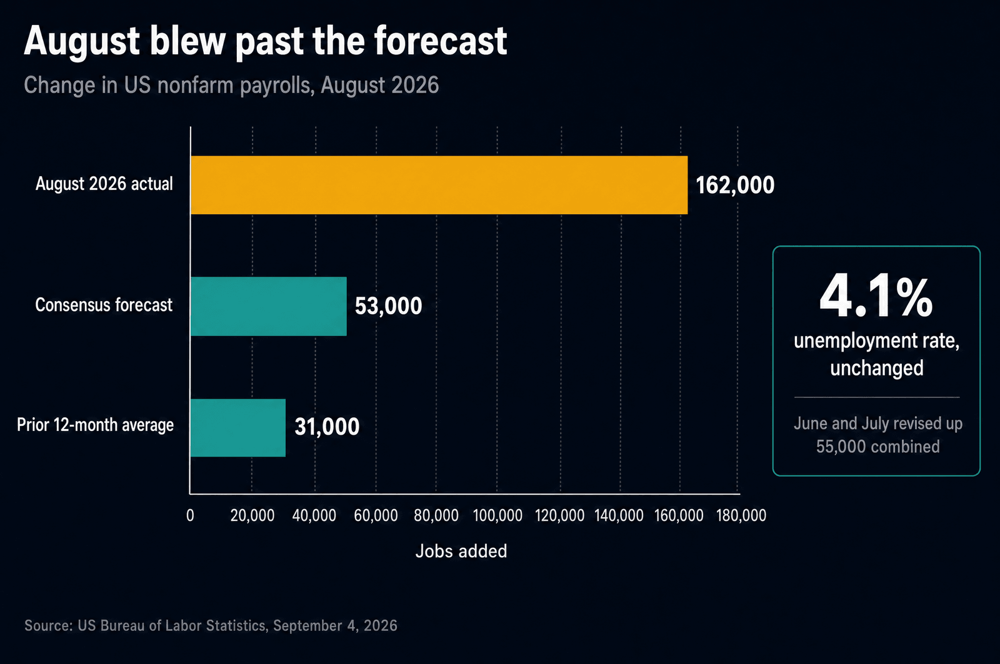
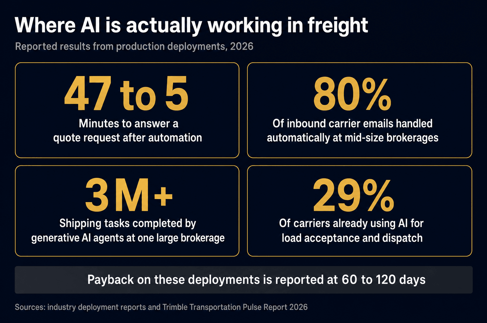
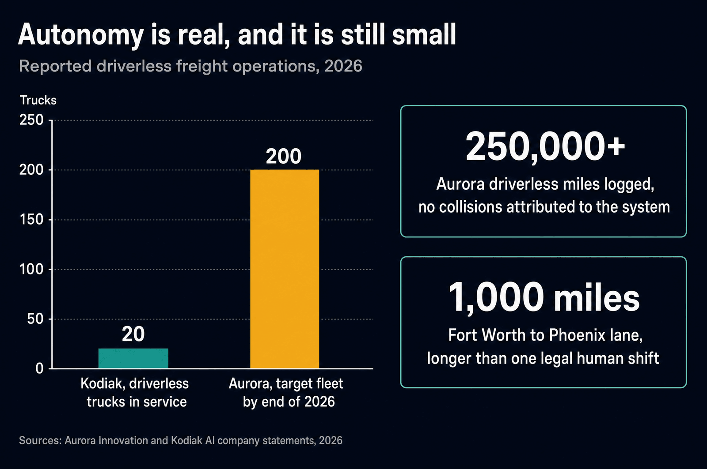

Yesterday OpenAI released GPT-6 Astra and its president suggested it might eventually be seen as the arrival of artificial general intelligence. This morning the US Bureau of Labor Statistics reported 162,000 jobs added in August against a forecast of about 53,000. Both landed on top of an economy where inflation is still running above 3 percent on both sides of the border.
If you move freight, the temptation is to read all of that as noise from another industry. It is not. One of those three headlines is already changing how loads get quoted and dispatched, one determines what your drivers and office staff cost, and one is mostly a story about a future that arrives more slowly than the press releases suggest. Sorting out which is which is worth ten minutes.
Three Things Landed in One Week
September 3: OpenAI ships a frontier model and gates part of it behind a trusted-access program because of what it can do in cybersecurity. September 4: the labour market comes in hot enough to reset expectations for the autumn. Both against inflation that has not returned to target in either country.
Those are not three separate stories for a carrier. They are the three inputs that decide whether the freight business gets cheaper to run: the cost of software, the cost of people, and the cost of everything else.
What GPT-6 Astra Actually Is
Astra was released on September 3, 2026 as a limited preview for trusted partners, with a broader rollout to paid ChatGPT tiers and the API following. OpenAI calls it a generational leap in computer use, professional work, software engineering and science. Its president, Greg Brockman, went further and suggested it could eventually be seen as the arrival of AGI. Cyber capabilities are restricted to a vetted testing group, and the public version refuses prompts in that area.
Strip the framing away and the claim that matters to an operations team is narrower: the model is better at staying inside task boundaries and finishing long multi-step workflows without drifting. That is precisely the failure mode that has kept AI stuck in pilots in this industry. A model that summarises a rate confirmation is a toy. A model that reads the confirmation, checks it against the tender, flags the discrepancy, and does that 400 times a day without inventing a number is a headcount decision.
"The question for freight was never whether the model is smart. It is whether it is boring: the same answer, on the same document, four hundred times a day, without drift."
Two cautions. AGI claims from a vendor on launch day are marketing until independent evaluation says otherwise. And Astra reportedly uses a reasoning technique that obscures part of its decision process, which matters in a regulated industry where you may have to explain why a load was accepted, a driver was routed a certain way, or a carrier was approved.
The Jobs Report Has an AI Fingerprint
August payrolls came in at 162,000 against roughly 53,000 expected, with unemployment steady at 4.1 percent, and June and July revised up by 55,000 combined. That is a labour market that is not cracking.

The detail worth noticing is underneath the headline. Bars and restaurants led the gains while information-sector employment fell, a split several analysts tied to AI investment and restructuring. That is the pattern this technology has produced so far: it does not remove work evenly, it removes the desk work first. Which is exactly the wrong intuition to carry into trucking, where most people picture the driver disappearing before the dispatcher.
For a carrier the practical read is that hiring stays competitive. Wage pressure does not ease in a market adding triple the expected jobs, and the labour constraints we wrote about in the driver shortage piece are not being solved by software this year.
Inflation Is Still the Tax on Every Load
US CPI ran 3.4 percent in the year to July, easing for a second month, with core at 2.5 percent. Canada's CPI was 3.0 percent in July, up from 2.8 percent in June, with trade tensions pushing fuel, vehicle and import-linked costs higher through the spring and summer.
Above-target inflation does three things to a fleet. It keeps borrowing and equipment costs elevated, which delays truck replacement. It keeps wage expectations rising, which is the largest line item after fuel. And it means any efficiency gained in the back office gets partly eaten before it reaches the bottom line. An AI agent that saves 40 hours of admin a month is real money, and it is also roughly what one round of cost inflation takes back.
Where AI Is Genuinely Working in Freight
Here is the part that is not speculative. In production deployments this year, mid-size brokerages report automating more than 80 percent of inbound carrier emails and cutting quote response time from about 47 minutes to under 5, with payback in 60 to 120 days. C.H. Robinson has reported more than three million shipping-related tasks completed by generative AI agents. Trimble's 2026 survey of supply chain executives found 29 percent of carriers already using AI for load acceptance and dispatching, with pricing and lane optimization the most common application.

Notice what all of it has in common. Documents, emails, quotes, appointments, invoices. High volume, low variance, and a mistake is embarrassing rather than dangerous. Trimble also found that two-thirds of shippers and more than half of carriers still see AI's role as augmenting human decisions rather than replacing them, which matches what we see: the tool drafts, a person signs.
There is a defensive use worth flagging too. The same technology that drafts your quotes also writes convincing carrier-impersonation emails, which is the fraud wave we covered in The Heist Is Now an Email. Verification discipline matters more, not less, as this gets cheaper for everyone.
The Cab Is the Last Thing to Automate
Autonomous trucking is genuinely operating, and it is genuinely small. Aurora reports more than 250,000 driverless miles across commercial routes with no collisions attributed to its system, and a roughly 1,000-mile Fort Worth to Phoenix lane that exceeds what a human driver can legally run in one shift. It is targeting about 200 driverless trucks by the end of 2026. Kodiak has roughly 20 driverless trucks in service with a customer and has introduced triple-trailer capability.

The deployment model tells you how long this takes. Autonomy runs hub to hub on sunbelt highway corridors, with human drivers handling first mile, last mile, urban delivery and anything that requires a conversation at a gate. Nothing about that model addresses a February run over the Coquihalla, a customer whose dock has no yard, or the corridor closures we lived through in BC's fire season. Canadian freight is a hard last case for autonomy, not an early one.
What We Automate, and What We Refuse To
We are a family-owned carrier running our own trucks out of Abbotsford and Calgary, and we built our own internal systems rather than buying a stack. That gives us a clear line about where software helps.
Send us your lanes and volumes. You will get a real quote from a real dispatcher, faster than you are used to, with the reasoning attached.
Get a Quote →Questions We Get Asked
What is GPT-6 Astra?
OpenAI's newest frontier model, released September 3, 2026 as a limited preview for trusted partners with a wider rollout to paid tiers following. OpenAI describes a generational leap in computer use, professional work, software engineering and science, and gates advanced cybersecurity capability behind trusted access. For freight the relevant claim is reliability on long multi-step workflows, not raw intelligence.
Will AI replace truck drivers?
Not in this cycle. Driverless freight is real but small: more than 250,000 driverless miles and a target of roughly 200 trucks by end of 2026 at the largest operator, about 20 in service at another. Against a fleet measured in millions of tractors that is a rounding error, and the model is hub to hub with humans still doing first mile, last mile and urban work.
Where is AI actually saving money in trucking today?
The back office. Reported deployments automate more than 80 percent of inbound carrier emails, cut quote response from about 47 minutes to under 5, and pay back in 60 to 120 days. One large brokerage reports more than three million shipping tasks completed by AI agents, and 29 percent of carriers already use AI for load acceptance and dispatch.
What did the August jobs report say?
US payrolls rose 162,000 against a consensus near 53,000, unemployment held at 4.1 percent, and June and July were revised up 55,000 combined. Bars and restaurants led hiring while information-sector employment fell, a split several analysts linked to AI investment and restructuring.
How does inflation affect freight rates right now?
US CPI ran 3.4 percent in the year to July with core at 2.5 percent, and Canada's was 3.0 percent in July. Above-target inflation keeps borrowing and equipment costs high, keeps wage pressure alive, and offsets much of the efficiency AI delivers in the office.
Should a small carrier invest in AI tools now?
Start where payback is measurable and failure is harmless: document handling, invoice matching, quote drafting, appointment scheduling, load-board triage. Keep a human on anything that binds you legally or financially, because an automated mistake in rate confirmation, safety or carrier vetting costs more than the tool saves.
Sources and Further Reading
- US Bureau of Labor Statistics, "Employment Situation, August 2026", released September 4, 2026.
- CNBC, "OpenAI begins rolling out Astra model after warning of its advanced cyber capabilities", September 3, 2026.
- Axios, "OpenAI releases new model GPT-6 Astra, says it may represent AGI".
- Statistics Canada, "Consumer Price Index, July 2026".
- Trimble, "Transportation Pulse Report 2026", based on 230+ responses from supply chain and logistics executives.
- Aurora Innovation, driverless service expansion announcements, 2026.
- Gartner via industry reporting, on agentic AI spending in supply chain software growing from under $2 billion in 2025 toward $53 billion by 2030.